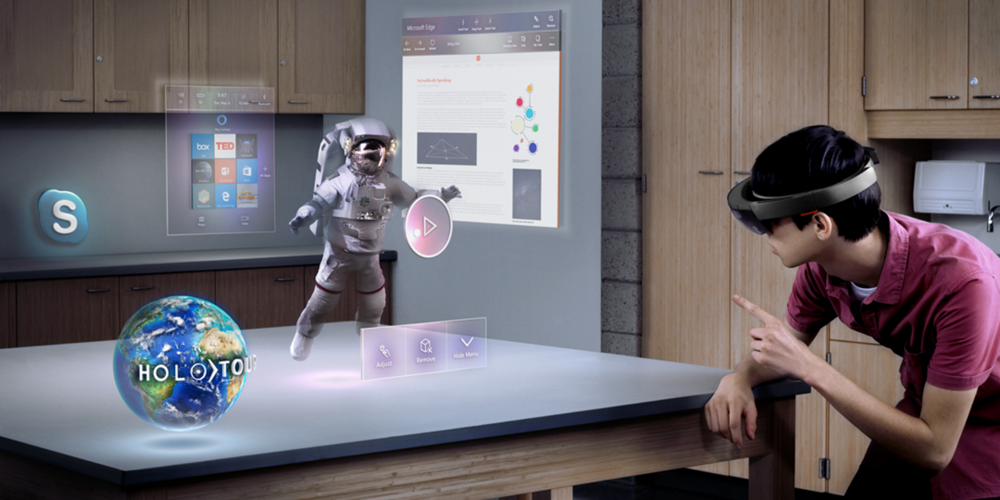

The internet of things, or IoT, is a system of interrelated computing devices, mechanical and digital machines, objects, animals or people that are provided with unique identifiers (UIDs) and the ability to transfer data over a network without requiring humman-to-human or human-to-computer interaction.
A Things in the internet of things can be a person with a heart monitor implant, a farm animal with a Biochip Transponderan automobile that has built-in sensors to alert the driver when tire pressure is low or any other natural or man-made object that can be assigned an IP address and is able to transfer data over a network.
Kevin Ashton co-founder of the Auto-ID Center at MIT, first mentioned the internet of things in a presentation he made to Procter & Gamble (P&G) in 1999. Wanting to bring radio frequency ID (RFID) to the attention of P&G's senior management, Ashton called his presentation "Internet of Things" to incorporate the cool new trend of 1999: the internet. MIT professor Neil Gershenfeld's book, When Things Start to Think, also appearing in 1999, didn't use the exact term but provided a clear vision of where IoT was headed
An IoT ecosystem consists of web-enabled smart devices that use embedded processors, sensors and communication hardware to collect, send and act on data they acquire from their environments. IOT devices share the sensor data they collect by connecting to an IoT gateway or other edge device where data is either sent to the cloud to be analyzed or analyzed locally. Sometimes, these devices communicate with other related devices and act on the information they get from one another. The devices do most of the work without human intervention, although people can interact with the devices -- for instance, to set them up, give them instructions or access the data.

The internet of things offers a number of benefits to organizations, enabling them to: